Entry
Name: JOOS
VAST Challenge 2025
Challenge 3
Team Members:
Lucas Joos, University of Constance, lucas.joos@uni-konstanz.de PRIMARY
Willi Kneer, University of Constance, willi.kneer@uni-konstanz.de
Jonathan Rentschler, University of Constance, jonathan.rentschler@uni-konstanz.de
Student Team: Yes
Tools Used:
Docker,
Gitlab, Kubernetes
Frontend:
Next JS + React, D3, Three.js, Sigma.js, HeroUi
Backend:
FastAPI, Ollama, Python , Jupyter
Database:
Neo4J
Approximately how many hours were spent working on this submission in
total?
360 hours
May we post your submission in the Visual Analytics Benchmark
Repository after VAST Challenge 2025 is complete? Yes
Video
Use visual analytics to analyze the available
data and develop responses to the questions to be provided. In addition,
prepare a video that shows how you used visual analytics to solve this
challenge.
Note:
the VAST challenge is focused on visual analytics and graphical figures
should be included with your response to each question. Please include a
reasonable number of figures for each question (no more than about 6) and keep written
responses as brief as possible (around 250
words
per question).
Questions
Clepper diligently recorded all intercepted radio communications over the last two weeks. With the help of his intern, they have analyzed their content to identify important events and relationships between key players. The result is a knowledge graph describing the last two weeks on Oceanus. Clepper and his intern have spent a large amount of time generating this knowledge graph, and they would now like some assistance using it to answer the following questions.
1 – Clepper found that messages frequently came in at around the same time each day.
a. Develop a graph-based visual analytics approach to identify any daily temporal patterns in communications.
b. How do these patterns shift over the two weeks of observations?
c. Focus on a specific entity and use this information to determine who has influence over them.
1a) Identifying Daily Temporal Patterns
To identify daily temporal patterns in
communications, we used a timeline component with brushing, linked to the
knowledge graph. This allows us to select a time range and immediately see
which events and entities are active during that period.
The following visualization shows the overall
temporal pattern by community, as detected using the Leiden Community Detection
algorithm:

From this visualization we observe that most
of the events take place between 10:00 AM and 04:00 PM, distributed between the
different communities. There is a consistent peak in activity between 10:00 AM
and 12:00 PM each day.
The community, which is present every day is
the Rodriguez Harbor Coordination (Blue Community) with its Entities displayed
in this graph:
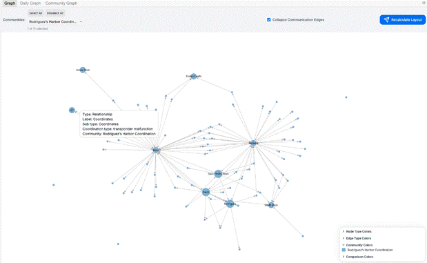
When taking a closer look at the events of the
Community:
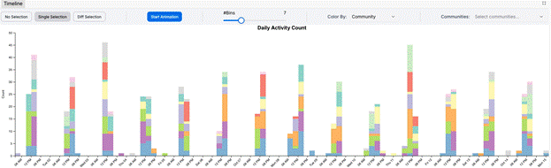
It is visible at they are mostly communicating
(purple bars), with some vessel activity, enforcements, assessments,
collaborations and tour activities in between.
The second most present community is the Nemo
Reef Operations community (Light Green Community), which has events always
around 12AM, except on 06.10.
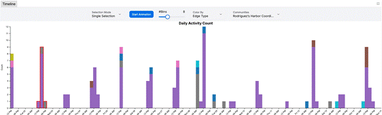
1b) Shifts in Patterns Over Two Weeks
Examining the temporal patterns over the
two-week period reveals the following:
Intercepted communications consistently occur
daily from 11:00 AM to 04:00 PM, including both weekdays and weekends.
There is noticeably less activity during the
first weekend (October 6–7) compared to the second weekend (October 13–14).
This suggests that while communication is
generally steady, there are fluctuations in activity levels, particularly on
weekends.
1c) Entity Focus:
We can determine who has
influence over a specific entity by sending the following prompt to the GraphRAG pipeline:
I observed that the vessels Seawatch,
Defender and Reef Guardian are closely associated with each other. Determine
the types of relationships or interactions that indicate influence (e.g.
mentorship, supervision, information control)
Output:
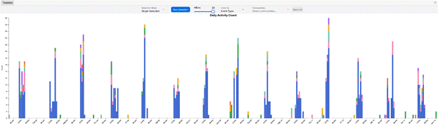
The model identifies the
relationship between Defender and Seawatch as a
supervisory kind with, Defender issuing instructions
related to patrol frequencies and area access.
2 – Clepper has noticed that people often communicate with (or about) the same people or vessels, and that grouping them together may help with the investigation.
a. Use visual analytics to help Clepper understand and explore the interactions and relationships between vessels and people in the knowledge graph.
b. Are there groups that are more closely associated? If so, what are the topic areas that are predominant for each group?
· For example, these groupings could be related to: Environmentalism (known associates of Green Guardians), Sailor Shift, and fishing/leisure vessels.
2a) Visual Analytics for Exploring Interactions and
Relationships
To help Clepper explore
the interactions and relationships between vessels and people, we applied the
Leiden algorithm to detect communities within the knowledge graph. This
approach revealed eleven distinct communities, with each node assigned to a
specific group.
In our Graph RAG
pipeline, these communities are automatically detected and summarized using a
large language model. The summaries are accessible by hovering over nodes in
the `Community Graph` visualization, providing instant context for each group.
The identified
communities are as follows:
1. Nemo Reef Protection
2. Himmap & Dolphin Bay Management
3. Rodriguez’s Harbor Coordination
4. Nemo Reef Operations
5. Restricted Access Issues
6. Nemo Reef Monitoring by EcoVigil
7. Nemo Reef operations by V. Miesel
8. Access Management
9. Nemo Reef interactions by Oceanus City
10. Nemo Reef Unauthorized Activity
11. Nemo Reef & Haacklee Harbor
Figure: Community Graph Visualization
With the community data,
we can change the colouring of the Timeline as well as the Node Link diagram of
the knowledge graph. To help the analysis of specific communities, we can
filter the nodes based on the community in the Node Link diagram and.
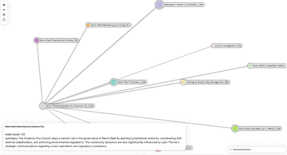
Figure: Community Graph visualization showing the "Nemo Reef interactions
by Oceanus City" community highlighted.
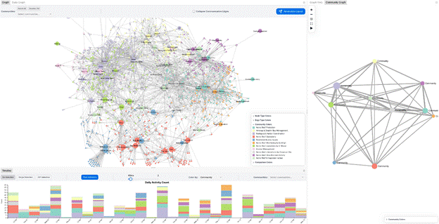
Figure: Knowledge Graph with the coloring based on
the community (top) in timeline of events colored by
the community (bottom)
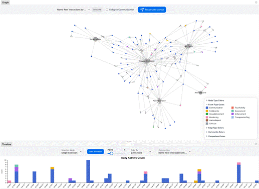
Figure: Knowledge Graph with the community `Nemo Reef interactions by Oceanus
City` selected (top) and the timeline of events associated with the same
community (bottom).
2b) Community Associations and Predominant Topics
The communities
"Nemo Reef Operations by V. Miesel" and "Rodriguez’s Harbor
Coordination" are highly interconnected, indicating frequent interactions
and possibly shared interests or collaborations. The edge size in the community
graph is proportional to the number of interactions between the two
communities. For these two communities, the edge size is relatively large.
Figure: Community graph with the two communities
"Nemo Reef Operations by V. Miesel" and "Rodriguez’s Harbor
Coordination" highlighted.
Approximately half of the
identified communities are primarily concerned with issues related to Nemo
Reef. This highlights that the Nemo Reef is a central topic in the network.
3 – It was noted by Clepper's intern that some people and vessels are using pseudonyms to communicate.
a.
Expanding upon your prior visual analytics, determine
who is using pseudonyms to communicate, and what these pseudonyms are.
· Some that Clepper has already identified include: “Boss”, and “The Lookout”, but there appear to be many more.
· To complicate the matter, pseudonyms may be used by multiple people or vessels.
b. Describe how your visualizations make it easier for Clepper to identify common entities in the knowledge graph.
c. How does your understanding of activities change given your understanding of pseudonyms?
3a) Pseudonym Detection
After looking over the Knowledge
Graph on Community of Persons and Names that looks very suspicious:
1. The Accountant (Davis)
2. Boss (Nadia Conti)
3. Small Fry (Rodriguez)
4. The Middleman (Liam Throne)
5. Mrs. Money (Elise)
6. The Intern (Sam)
7. The Lookout (Kelly)
After asking the GraphRAG
Pipeline what this Group is all about, we got this Answer:
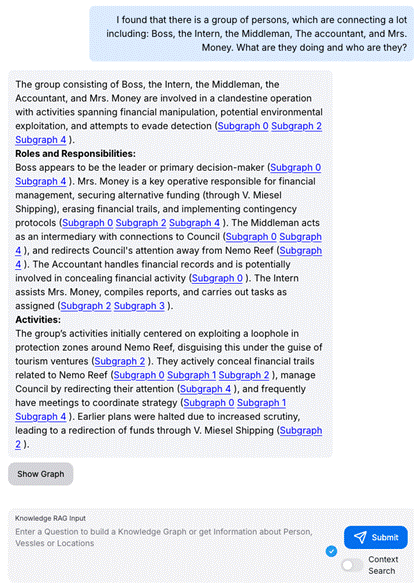
Figure: Prompt "I found that there is a group of persons, which are
connecting a lot including: Boss, the Intern, the Middleman, The accountant,
and Mrs. Money. What are they doing and who are they?"
The Middleman: Looking at this Information we found
that the easiest Entity to uncover would be the Middleman. Because he is a
Person talking to the city council, who has specific information only he and
the Middleman could have.
So, we selected the Community with
the city council in the Bar chart to look at the events they have.
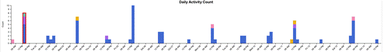
Figure: City Council Events Timeline
And when looking at the events, we
also included the Community with all the discovery nick names. Which led to
this graph for the first timestamp (01.10 10:00 AM - 01:00 PM).
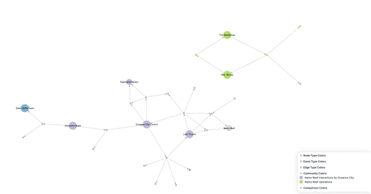
Figure: Liam Thornes @ 01.10 10:00 AM - 01:00 PM
Here at 10:51 AM the City Council
asks Liam to increase the patrols at Nemo Reef, because they heard about
increased vessel activity there. At 10:53 AM the Middleman sends to Mrs. Money
that the Council has flagged increased activity at Nemo Reef.
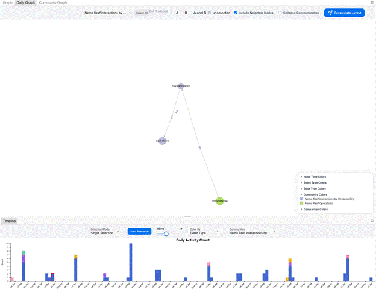
Figure: Liam Thornes as Middleman
And here the Paackland
Harbour asks Liam for a report, and he answers as the Middleman. Fully exposing
himself.
Mrs. Money: The next easiest Person to uncover
was Mrs. Money. While reading the GraphRAG answer, we
discovered that Mrs. Money must be a person who often communicates with V.
Miesel Shipping. And after taking the same approach as for the Middleman, we
found out that Mrs. Money is Ellise.
The Intern and the Lookout: While investigating patterns in the
graph, we found that Kelly and Sam's communication and the Lookout's and the
Interns' communication are about the same things. With Kelly being the Lookout
and Sam being the Intern.
Small Fry: With the GraphRAG we found out that
Rodriguez is Small Fry.
3c) Understanding Activities with
Pseudonyms
Yes, it did
change. Before we knew that Liam Throne was the Middleman, his questions to the
Council seemed normal, but after that, you can see the tone shift and how he is
seeking information.
4 – Clepper suspects that Nadia Conti, who was formerly entangled in an illegal fishing scheme, may have continued illicit activity within Oceanus.
a. Through visual analytics, provide evidence that Nadia is, or is not, doing something illegal.
b. Summarize Nadia’s actions visually. Are Clepper’s suspicions justified?
4a) Evidence of Illegal Activity
We can ask the RAG and look at the Subgraphs:
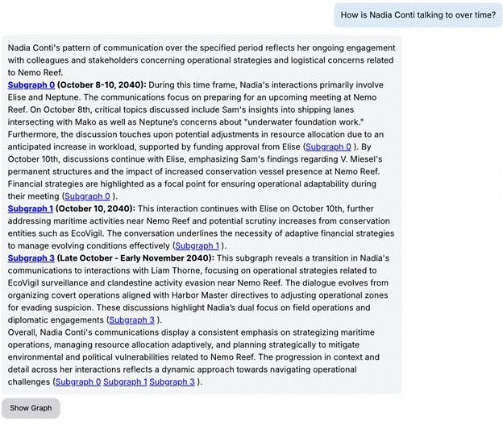
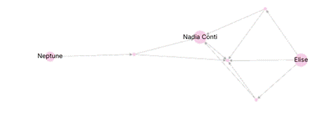
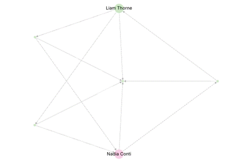
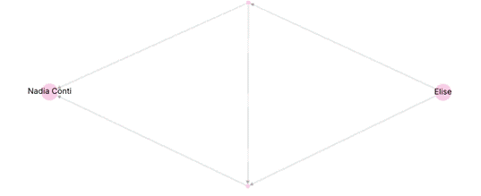
4b) 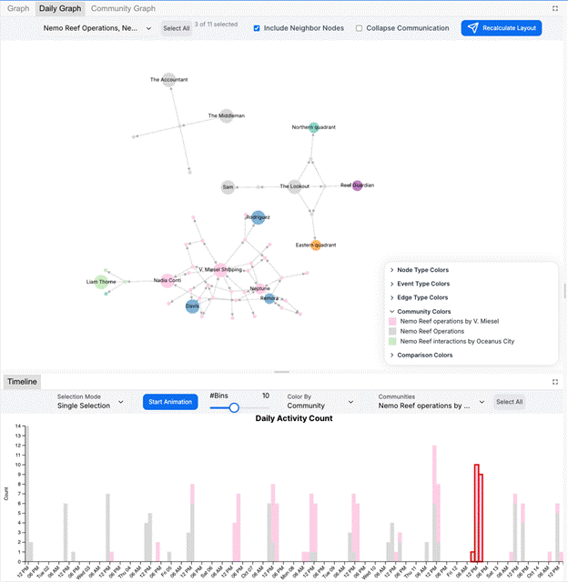
Here in the Conversation, Nadia is talking to Liam Throne (The
Middleman) about a Meeting. And later he talks to The Accountant (Davis) about
this Meeting, but not with Nadia, but with the Boss. (Found use RAG-Subgraphs)
Reflection
Questions (Optional)
· Given the task to develop visualizations for knowledge graphs, did you find that the challenge pushed you to develop new techniques for visual representation?
· Did you participate in last year’s challenge? If so, did your experience last year help prepare you for this year’s challenge?
· What was the most difficult part of working on this year’s data and what could have made it more accessible?
We did not participate in last
year's challenge.
Working with the html Form was a bit
difficult, because not all our machines used supported Microsoft Word. Markdown
or latex would have been easier to work with.
All
VAST data is fully synthetic. Any resemblance to real people, places, or events
is purely coincidental. Some elements of the 2025 VAST Challenge resemble data
released for the 2024 VAST Challenge. Participants should not assume that there
is any continuity and should not use any earlier or any external data for their
submission. Mini-Challenge 3 participants should only use data supplied for
this mini-challenge in their submission. Data from other challenges should not
be combined, except in the Design Challenge.